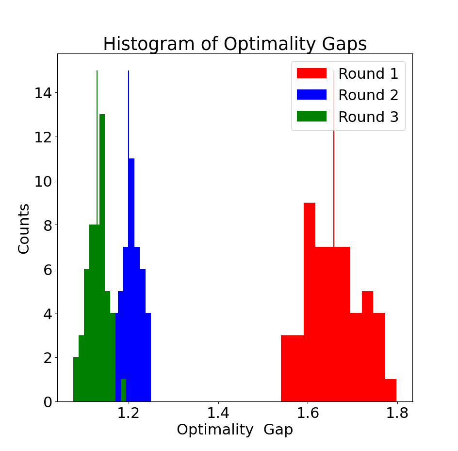

Kevin Shu
Diego Cifuentes
Georgia Tech
Alejandro Toriello
Georgia Tech
Input: a graph
An independent set is a collection of vertices in a graph where no two vertices share an edge.
Maximum Independent Set: Find the largest independent set in a graph. The size of this set is denoted $\alpha(G)$.
This problem is very hard; it is NP-hard to approximate to within a factor of $n^{\epsilon}$ for some $\epsilon > 0$.
For some classes of graphs, it can be computed efficiently.
For the class of perfect graphs, the best known algorithms are still based on semidefinite programming.
Let $G$ be a graph with $n$ vertices, and suppose that $S$ is a maximum independent set in $G$.
Let $v$ be a vector in $\R^{n + 1}$ so that $v_0 = 1$, and for $n \ge i \ge 1$, \[ v_i = \begin{cases} 1 \text{ if }i\in S\\ 0 \text{ otherwise.} \end{cases} \]
Let $G$ be a graph with $n$ vertices, and suppose that $S$ is a maximum independent set in $G$.
Let $v$ be a vector in $\R^{n + 1}$ so that $v_0 = 1$, and for $n \ge i \ge 1$, \[ v_i = \begin{cases} 1 \text{ if }i\in S\\ 0 \text{ otherwise.} \end{cases} \]
Let $M$ be the matrix $v v^{\intercal}$, then
\[ \alpha(G) = \sum_{i=1}^nv_i, \]
$M_{ij} = 0$ when $ij \in G$,
$M$ is PSD and rank 1, and
| $\alpha(G)$ | =$\le$ | $\max_M$ | $\sum_{i=1}^nv_i$ |
| such that | $M_{ij} = 0\text{ when }ij \in G$ | ||
| $M$ is PSD and rank 1 | |||
| \[ M= \begin{pmatrix} 1 & v_1 & v_2 & \dots & v_n\\ v_1 & v_1 & M_{12} & \dots & M_{1n}\\ v_2 & M_{12} & v_2 & \dots & M_{2n}\\ \ddots & \ddots & \ddots & \ddots & \ddots \\ v_n & M_{1n} & M_{2n} & \dots & v_n \end{pmatrix} \] | |||
| = | $\vartheta(G)$. |
$M$ tells us about pairs of vertices and how the presence of one vertex affects the presence of another in the maximum independent set.
How do we make use of correlations between larger sets of vertices to improve this relaxation?
Fix $2 \le k \le n$, and let $m = \sum_{i=0}^k \binom{n}{i}$. For a graph $G$ with maximum independent set $S$, let $v \in \R^m$ (indexed by sets of size at most $k$) with \[v_T = 1_{T \subseteq S}.\]
Now, $M = vv^{\intercal}$ is a $m \times m$ matrix with entries indexed by pairs of sets of size at most $k$.
We get constraints that say that if $S \cup T = U \cup V$, then $M_{ST} = M_{UV}$ (equivalently, there is a variable for each set of size at most $\min \{2k, n\}$), that $M$ is PSD and rank 1.
For a fixed $k$, relaxing the constraint that $M$ be rank 1 leads to a semidefinite program.
These semidefinite programs form a hierarchy of bounds for $\alpha$, which is a special case of the Lasserre-Parrilo hierarchy of semidefinite programs. When $k = n$, the program is tight.
Instead of $G$ being a fixed graph, we may take $G$ sampled from a probability distribution, so that it is a random variable.
This comes in the form of a probability distribution on all graphs on $n$ vertices.
As an example, we may take $G$ to be the Erdős–Rényi random graph where each edge appears independently with probability $p$.
Can we bound the expected indepdendence number of $G$ $\E[\alpha(G)] = \sum_{G} p(G)\alpha(G)$?
Can we bound the expected indepdendence number of $G$ $\E[\alpha(G)] = \sum_{G} p(G)\alpha(G)$?
Yes! Use the same hierarchy, but modifying the constraints to yield bounds on the probabilities of subsets being independent.
If $G$ is a random graph, and $q_{ij}$ is the probability that the edge $ij$ does not appear in $G$, then
| $\E[\alpha(G)]$ | $\le$ | $\max_M$ | $\sum_{i=1}^nv_i$ |
| such that | $M_{ij} \le q_{ij}$ | ||
| $M$ is PSD | |||
| \[ M= \begin{pmatrix} 1 & v_1 & v_2 & \dots & v_n\\ v_1 & v_1 & M_{12} & \dots & M_{1n}\\ v_2 & M_{12} & v_2 & \dots & M_{2n}\\ \ddots & \ddots & \ddots & \ddots & \ddots \\ v_n & M_{1n} & M_{2n} & \dots & v_n \end{pmatrix} \] | |||
| $:=$ | $\phi_1(G)$. |
We may generalize the higher levels of the hierarchy similarly, where each level of the hierarchy depends on the values of $q_S$, where $q_S$ is the probability that $S \subseteq V$ is independent in $G$, yielding a sequence of bounds \[ \E[\alpha(G)] \le \phi_n(G) \le \phi_{n-1}(G) \le \dots \le \phi_1(G). \]
Equations are the same as in the deterministic case, only have inequalities of the form $M_S \le q_S$.
Note that these probabilities are often much easier to calculate explicitly than the expected independence numbers of $G$ directly.
This hierarchy does not always converge to the optimum in all cases because there are multiple graphs with the same probabilities of subsets being independent.
A symmetric random graph for us is a random graph in which $q_S$ only depends on $|S|$.
For example:
For these symmetric random graphs, it is possible to give a simpler version of the last level of the hierarchy.
The last level of the hierarchy is equivalent to a linear program if the underlying graph is symmetric.
| $\phi_n(G) =$ | min | $\sum_{i=1}^n i x_i$ |
| such that | $\sum_{i=\ell}^{n} \binom{i}{\ell} x_i \le \binom{n}{\ell}q_{\ell},$ for each $\ell \le n$. | |
| $\sum_{i=1}^n x_i = 1$ | ||
| $x_i \ge 0$ for each $i \le n$. |
Intuitively, $x_i$ is the probability that the independence number of $G$ is exactly equal to $i$.
| min | $\sum_{i=1}^n i x_i$ |
| such that | $\sum_{i=\ell}^{n} \binom{i}{\ell} x_i \le \binom{n}{\ell}q_{\ell},$ for each $\ell \le n$. |
| $\sum_{i=1}^n x_i = 1$ | |
| $x_i \ge 0$ for each $i \le n$. |
Proof idea: We can think of the feasible region of the last level of the Lasserre hierarchy as a polytope, so we can reduce the SDP to a linear program at that point. That linear program is symmetric, so many of its inequalities can be made redundant. Symmetry reduction applied to that linear program yields this linear program.
In fact, we can analyze this linear program a little more and get an even simpler (almost) closed form solution.
There is an optimal solution to the above linear program with the property that at most 2 of its entries are nonzero. Its optimum value is equal to \[ \min_{1 \le \ell \le k+1 \le n} k - \frac{\binom{k}{\ell}}{\binom{k}{\ell-1}}+\frac{\binom{n}{\ell}}{\binom{k}{\ell-1}}q_{\ell}. \]
We can use this closed form to analyze the performance of the algorithm in some cases.
It is known that for any fixed $p$, the expected independence number of the Erdős–Rényi random graph is very close to \[ k^* = \min \{k : \binom{n}{k} (1-p)^{\binom{k}{2}} \le \log(n)\}. \]
On the other hand, our methods show that the expected independence number of $G$ is at most \[ \kappa^* = \min \{k : \binom{n}{k} (1-p)^{\binom{k}{2}} \le 1\}. \]
Consider $G_n$ chosen uniformly at random from all spanning trees on $n$ vertices. It is known that \[ \lim_{n\rightarrow \infty} \frac{\alpha(G_n)}{n} = \rho \sim 0.5671. \]
On the other hand, our methods show that the expected independence number of $G_n$ is at most \[ \frac{\alpha(G_n)}{n} \le \rho' \sim 0.6399. \]
If we consider a variant of the Erdős–Rényi graph in which the edge probabilities are not all the same, then we obtain a nonsymmetric graph.
Optimality gaps for different rounds of the Lasserre hierarchy for different (randomly chosen) random graph families on 10 vertices. The lines represent the geometric mean of the optimality gaps.